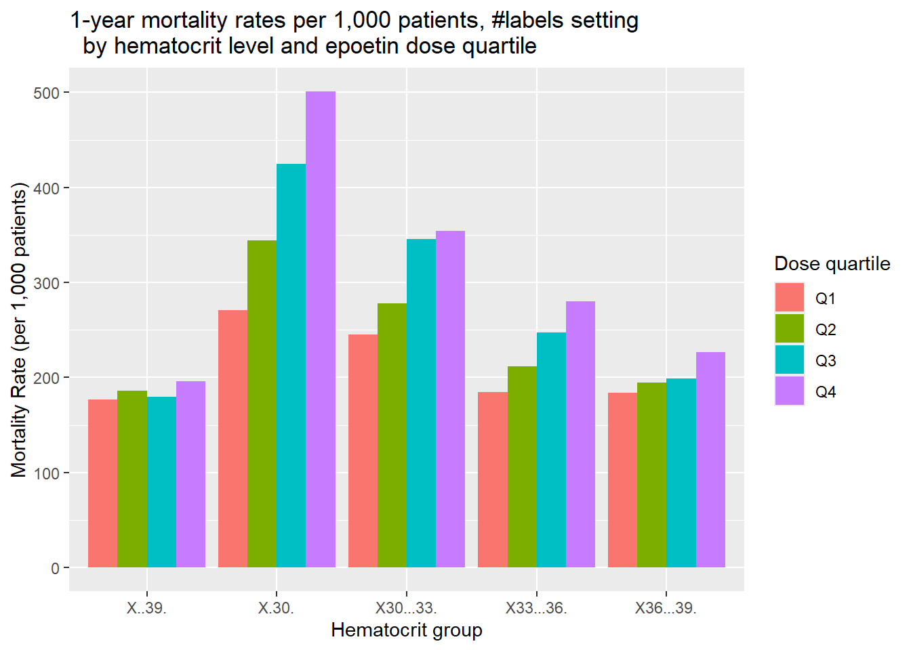
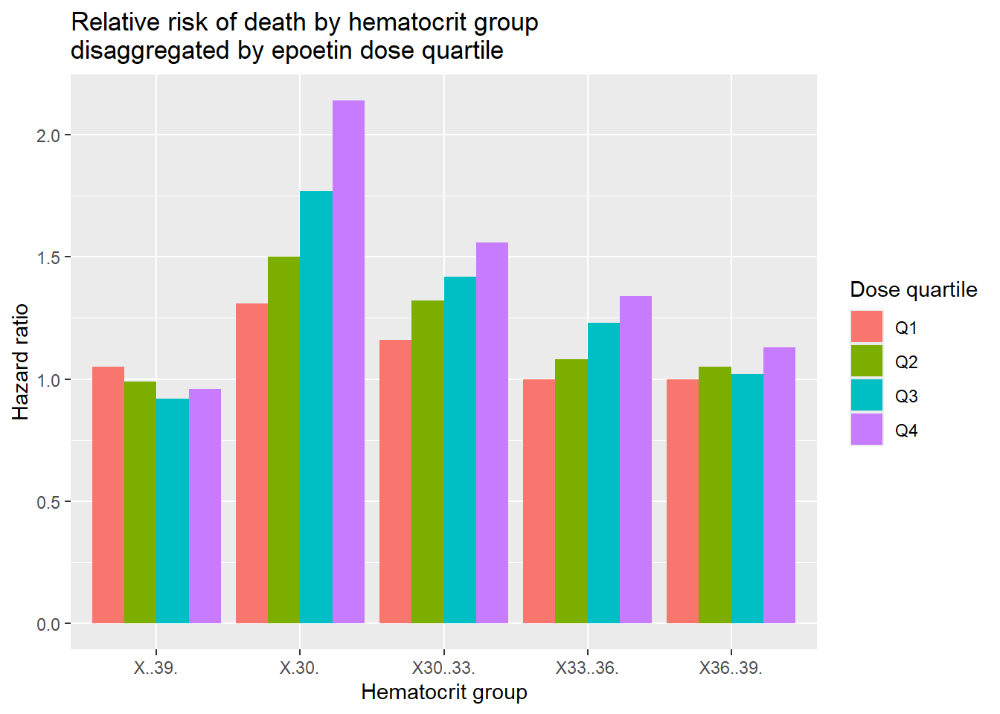

Następujące obiekty zostały zakryte z 'package:stats':
filter, lag
Następujące obiekty zostały zakryte z 'package:base':
intersect, setdiff, setequal, union
library(tidyr)
Uploading data
First, I need to upload set of data which was the base for the original plot. I copied the tables from publication “Cotter DJ, et al. (2004) Hematocrit was not validated as a surrogate endpoint for survival among epoetin-treated hemodialysis patients.” and I created proper csv files.
First, make the table mortality_ratio in long format:
mortality_ratio_long<-pivot_longer(data=mortality_ratio,cols=colnames(mortality_ratio)[-1], #pivoted data from all columns except for 1stvalues_to ="Ratio", #name of the column contained values of the mortality ratenames_to ="Hematocrit_group") #name of the column contained names of the groupsmortality_ratio_long
When we have our table prepared, we can create more readable plot. For that, we can use geom_bar function.
ggplot(data = mortality_ratio_long, aes(x = Hematocrit_group, fill = Dose_Quartile))+geom_bar(aes(y=Ratio), stat ="summary", position ="dodge")+#creation of bar chartlabs(title="1-year mortality rates per 1,000 patients, #labels setting by hematocrit level and epoetin dose quartile", x="Hematocrit group", y="Mortality Rate (per 1,000 patients)",fill ="Dose quartile" )
No summary function supplied, defaulting to `mean_se()`

What I changed:
change from 3D format to 2D - easier to read
data is divided by hematocrit group and each value contains of 4 quartile bars
colors are more eye-pleasing
Relative risk of death by epoetin dose quartiles as a function of hematocrit level
Fixing the second plot would be similar to the first one. First, table format change:
hazard_ratio_long<-pivot_longer(data = hazard_ratio,cols=colnames(hazard_ratio)[-1], #pivoted data from all columns except for 1stvalues_to ="Relative_risk", #name of the column contained values of the ralative risk of deathnames_to ="Hematocrit_group") #name of the column contained names of the groupshazard_ratio_long
Again, we can use geom_bar function to create better plot:
ggplot(data = hazard_ratio_long, aes(x = Hematocrit_group, fill = Dose.Quartile))+geom_bar(aes(y=Relative_risk), stat ="summary", position ="dodge")+#creation of bar chartlabs(title="Relative risk of death by hematocrit groupdisaggregated by epoetin dose quartile", #labels settingx="Hematocrit group", y="Hazard ratio",fill ="Dose quartile" )
No summary function supplied, defaulting to `mean_se()`

The changes in plot above are the same as changes in the previous one.